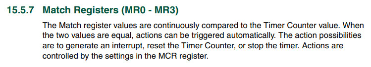
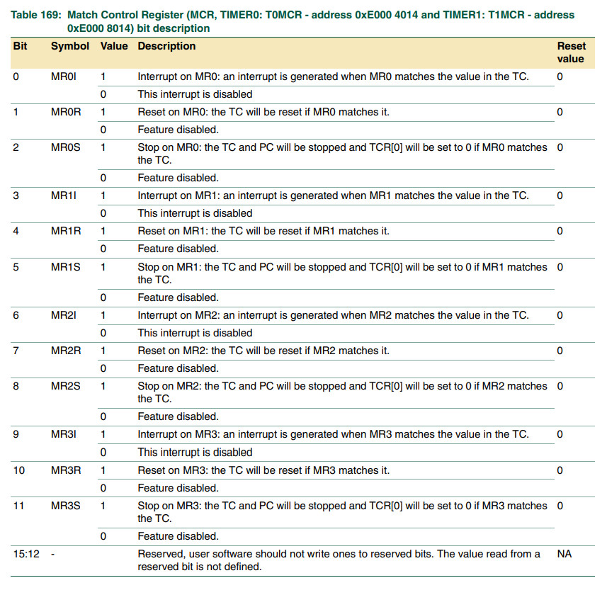
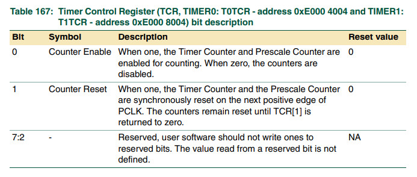

參考資料：
https://www.keil.com/dd/docs/datashts/philips/user_manual_lpc2101_2102_2103.pdf
暫存器



.equ IODIR, 0xe0028008
.equ IOCLR, 0xe002800c
.equ IOSET, 0xe0028004
.equ PINSEL0, 0xe002c000
.equ EXTINT, 0xe01fc140
.equ VICIntEnable, 0xfffff010
.equ T0PR, 0xe000400c
.equ T0MR0, 0xe0004018
.equ T0MCR, 0xe0004014
.equ T0TCR, 0xe0004004
.equ T0CTCR, 0xe0004070
.equ T0IR, 0xe0004000
.data
blink: .dcb 1
.text
.align 2
.global _start
_start: b reset
_undef: b .
_swi: b .
_pabort: b .
_dabort: b .
_reserved: b .
_irq: b irq_handler
_fiq: b .
reset:
mrs r0, cpsr
bic r0, #0x80
msr cpsr_c, r0
ldr r0, =T0PR
ldr r1, =0x63
str r1, [r0]
ldr r0, =T0MR0
ldr r1, =5000
str r1, [r0]
ldr r0, =T0MCR
ldr r1, [r0]
orr r1, #0x03
str r1, [r0]
ldr r0, =T0TCR
ldr r1, =0x02
str r1, [r0]
ldr r0, =T0TCR
ldr r1, =0x01
str r1, [r0]
ldr r0, =VICIntEnable
ldr r1, =(1 << 4)
str r1, [r0]
ldr r0, =IODIR
ldr r1, =(1 << 22)
str r1, [r0]
ldr r0, =IOCLR
ldr r1, =(1 << 22)
str r1, [r0]
ldr r0, =blink
ldr r1, =0x00
str r1, [r0]
b .
irq_handler:
ldr r0, =blink
ldr r1, [r0]
cmp r1, #0x00
beq 1f
ldr r0, =IOSET
ldr r1, =(1 << 22)
str r1, [r0]
b 2f
1:
ldr r0, =IOCLR
ldr r1, =(1 << 22)
str r1, [r0]
2:
ldr r0, =blink
ldr r1, [r0]
eor r1, #0xff
str r1, [r0]
ldr r0, =T0IR
ldr r1, =0x01
str r1, [r0]
subs pc, lr, #4
.end
完成